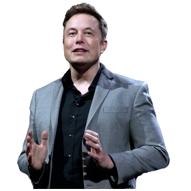
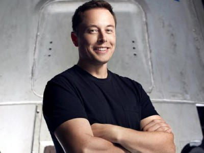

Биография
Кто такой Илон Маск?
Илон Маск — американский предприниматель, инженер и миллиардер, родился 28 июня 1971 года в Претории, ЮАР. Он является основателем и CEO таких компаний, как Tesla, SpaceX и Neuralink.

Ранние годы
Маск проявлял интерес к технологиям с юного возраста. В 1988 году он переехал в Канаду, чтобы избежать военной службы в ЮАР, и затем вернулся в США, где поступил в Университет Пенсильвании.
Карьерный путь
После завершения учебы Илон основал стартап Zip2, который был продан в 1999 году за почти $300 миллионов. Затем он запустил X.com, который позже стал PayPal и был продан eBay за $1,5 миллиарда в 2002 году. Маск также активно инвестирует в проекты, направленные на развитие искусственного интеллекта, солнечной энергетики и транспортных систем, таких как Hyperloop.

Общественное мнение
У людей мнение об Илоне Маске складывается противоречиво и варьируется от восхищения до критики.
- Положительное восприятие:
Многие считают Маска вдохновляющим лидером, внесящим значительный вклад в науку и технологии, особенно в области космических исследований и электромобилей. Его амбициозные проекты, такие как SpaceX и Tesla, вызывают восхищение и поддерживает имидж прогрессивного бизнесмена. - Критика и скандалы:
В то же время Маск подвергся критике за свои заявления и поведение, включая обвинения в антисемитизме и неоднозначные высказывания по поводу различных социальных и политических вопросов. Такие действия часто вызывают негативную реакцию и сомнения по поводу его влияния на общественное мнение. - Маргинальные взгляды:
Некоторые эксперты предупреждают о необходимости не переоценивать его влияние, отмечая, что его репутация может варьироваться в зависимости от контекста и времени.